Central Yharnam is the first main area of the game, taking form as a maze of towering, cast-iron Gothic buildings. The whole area is filled with Mad Villagers, and other dastardly creatures, including the Cleric Beast, an optional boss that ambushes you on the Great Bridge. The Cleric Beast is most likely the first boss that players will encounter in the game. Central Yharnam also harbors a network of sewers leading to a mandatory boss, Father Gascoigne.
General Information
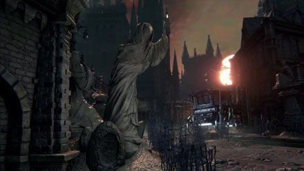
- Previous: Hunter's Dream
- Next: Oedon Chapel
- Suggested Level: 14 to 20
- Suggested Upgrade: +1 or +2
- Bosses: 2
- Lamps: 2
Central Yharnam Map
{kind=link}
NPCs in the area
Bosses
Items
Weapons
- Molotov Cocktail x14
- Pebble x8
- Saw Spear
Consumables
- Blood Stone Shard x10
- Blood Vial x18
- Bold Hunter's Mark x2
- Coldblood Dew (1) x7, (2) x1, and (3) x1
- Fire Paper
- Madman's Knowledge x2
- Oil Urn x4
- Pungent Blood Cocktail x2
- Quicksilver Bullets x35
- Thick Coldblood (5) x1
Specials
Key(s)
Enemies
- Hunstman (Torch & Axe, Torch & Shield, Sickle, Cleaver, Cutlass, Pitchfork, Rifle)
- Executioner
- Wheelchair Hunstman (Pistol)
- Rabid Dog
- Carrion Crow
- Huntsman's Minion (Brick, Statue)
- Large Huntsman (Torch & Saw, Spear)
- Labyrinth Rat
- Rotted Corpse
- Maneater Boar
- Scourge Beast
Lore Notes
- Within the Dark House, near the man in the wheelchair, on the bookcase to the leftmost side of the room, is a glowing paper, with information about the Night of the Hunt.
- It reads: "When The hunt Began, the Healing Church left us, blocking the great bridge to Cathedral Ward, as Old Yharnam burned to the ground that moonlit night."
Central Yharnam Walkthrough
From the Lantern
At the Central Yharnam Lamp, walk straight to the window marked by a Red Lamp, and speak to the NPC Gilbert; he will give you some basic information about the world we are in (Note: we come back to him after we've defeated Father Gascoigne for a free Flamespraryer). After, head to the right of his house, and then left down the stairs. You'll find 8x Pebbles. Then follow the path to the right and cross the bridge where a Hunter with a hatchet lies in wait behind some crates. You can drop off on the left, through a hole in a broken fence (a Hunter waits below by a bonfire), but that is not recommended for your first pass through.
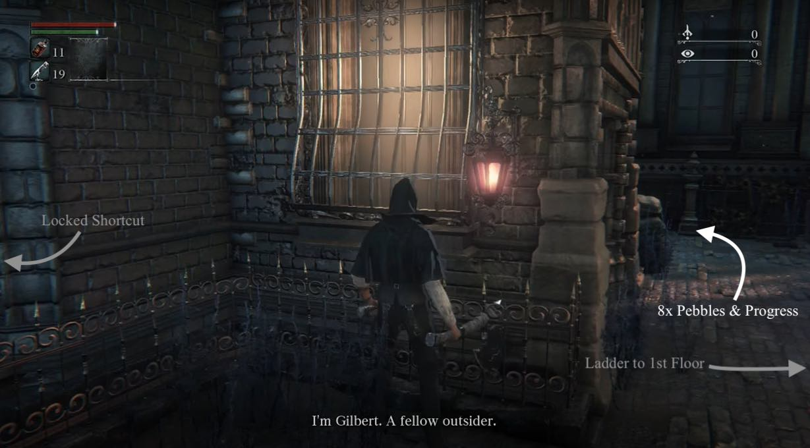
TIP: All enemies in Bloodborne can be run past (except bosses) and will stop pursuing you after you get far enough away from them. This means that you don’t have to kill all the enemies you encounter, even if they notice you and start chasing. However it is strongly recommended that you try to kill all the enemies around the bonfire on your first run through due to the blood echoes they drop and the practice you will get from doing so.
Head right and down some more stairs and you will see a Hunter with a Wooden Shield with his back to you. Be aware of the other Hunter on the floor to his right before rushing in. One those two enemies are defeated, wait at the top of the stairs. A group of four hunters will patrol the path below. Wait for all of them to pass, then either use your Pebbles to pull them one at a time, or ignore them and head left back down where the patrol came from to unlock a gate which leads back to the 1st Floor Sickroom, Iosefka's Clinic, and a ladder that allows you to access the Central Yharnam Lantern.
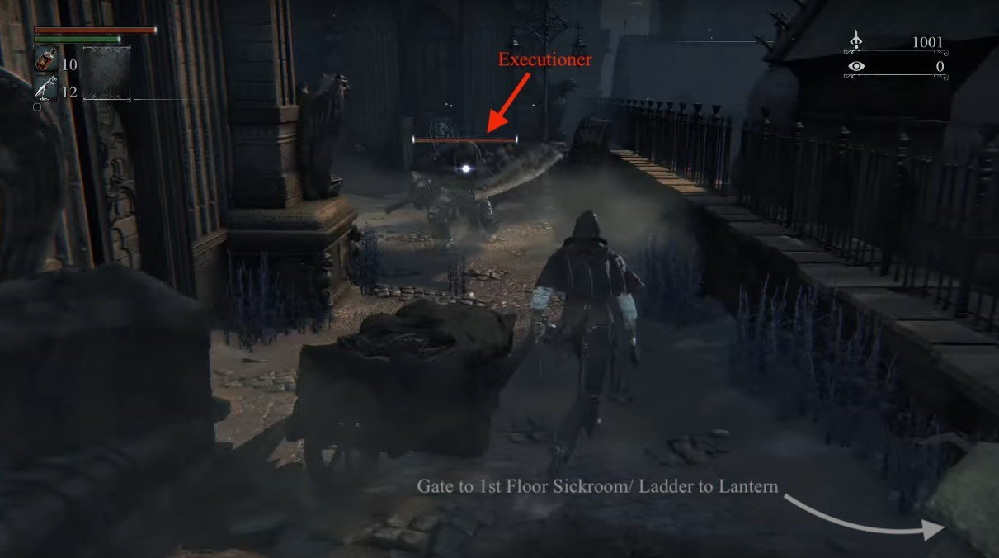
To the left of the gate (from the side you opened it), there is an Executioner behind breakable boxes. Proceed with caution: this enemy will present a greater challenge at your low level. Executioners have a high chance of dropping Tempering Blood Gemstones, which makes this enemy particularly useful for early gem farming. Going back along the road that the group of Hunters travel, there are multiple NPCs locked in their homes that you can interact with. Simply look for the red lanterns beside their doors. These NPCs offer nothing beyond dialogue and can be skipped without consequence. Head back up the path and take care of any straggling Hunters. Keep an eye on the right for a staircase that leads to a single Hunter guarding 4x Molotov Cocktails. Past this set of stairs, on the other side of the carriage, is another set of stairs guarded by a sleeping Rifle Huntsman.
TIP: Maintain a watchful eye on the mob surrounding the bonfire ahead, as some enemies continue to patrol the path. If you draw their attention, back up and take them out one by one to avoid drawing the entire mob.
Take the stairs guarded by the sleeping Rifle Hunter. To the right is another set of stairs that leads to 1x Blood Stone Shard guarded by a Hunter waiting around the corner to ambush you on your right. You'll notice that the path extends to the right, around the large area containing the bonfire. At the end of this path is a 5x Quicksilver Bullet drop. You may leave it until the enemies are cleared out, or advance to collect them. Advance cautiously, however, as enemies lie in ambush, and you may draw additional enemies from the bonfire, as there are two more sets of stairs leading to this upper path. At the end of this path is an item blocked by a gate. You will have access to it soon.
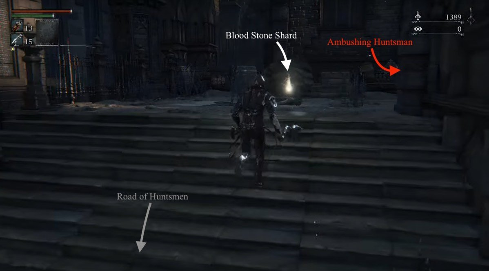
The large mob contains three Hunters with Pitchforks, two with Rifles, four with Axes and Torches, one with a Shield and Torch, and a dog hidden at the back behind the carriage on the left. The recommended strategy to employ goes as follows:
- Slowly approach the mob until you hear a bell ring. This will cause the big group to disband and patrol. A few enemies will walk down the street and will not return, and the larger mob from earlier will not return.
- Use your Pebbles or the environment to draw the enemies out in small groups, either up the stairs on the path you've cleared, or back down the path that you came from.
- Pay attention to the sounds of gunfire, as the bullets that the Rifle Hunter fire travel slowly enough that you will be able to dodge out of the way in time if you dodge as you hear the gunshot.
- The Rifle Hunters will not advance, so you will have to rush them. Serpentine, pay attention to their shots, and get to know their timing. The closer you get to a Rifle Hunter, the less time you have to dodge. Within a few meters, you should dodge as they level their rifle at you to successfully avoid their shots.
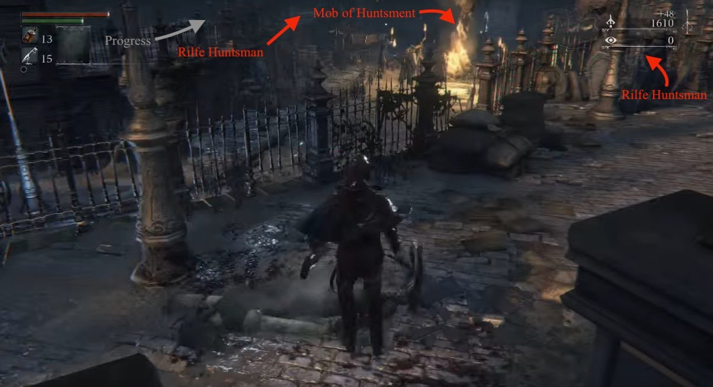
Something will growl and bang on the large doors at the end of the area. You can safely approach the doors and pick up the two Blood Vials. There is a 1x Coldblood Dew to the left of where the upper Riflemen is. To the left of the great doors is a short stairway leading to another elevated area that leads you to the other side of the great doors. Follow the path through the door, then immediately cut left and smash the barrels to find 1x Bloodstone Shard. Continue straight, and collect the 2x Blood Vials on the body. Follow the path to the end to speak to another NPC.
Kennel Shortcut
To the left of this NPC's door is a shortcut blocked by breakable barrels. This path leads to the Kennels area (see below), and allows you to both skip a large part of the level, and open the second major shortcut of Central Yharnam. From where you land, walk straight and take the set of stairs on your left. Watch out for loose Rabid Dogs. Take the next set of stairs on your left and grab the Coldblood Dew (1) at the end. Go back down, turn around, and run straight back to unlock your shortcut. Straight through the Dark House is a path back to the Central Yharnam lantern.
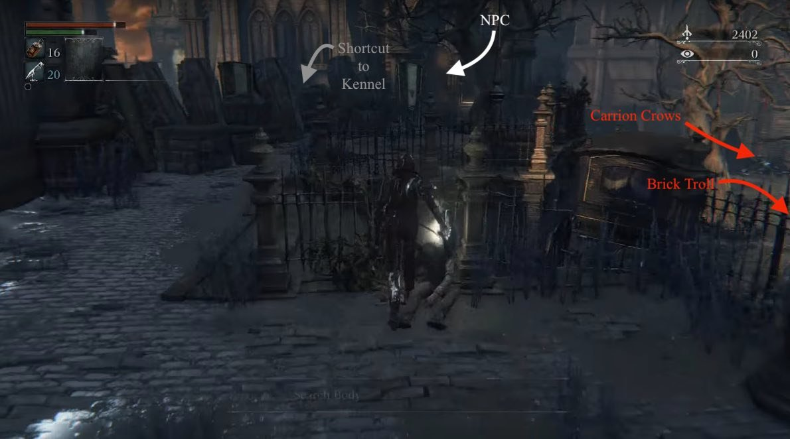
Assuming you did not take the shortcut, turn back and head down the stairs and towards the open area with the fountain. Towards the back, opposite the great doors, are 3 Carrion Crows. Behind the coffins there are two Oil Urns. Now get ready to kill the Brick Troll that you've only encountered through his banging on the other side of the great doors. This is your opportunity to learn how to parry this enemy; most of their attacks are slow and projected, giving you plenty of time to counter. Try to time your shot to match the start of their downswing. The two bodies that the Brick Troll guards, carry 1x Torch, and 2x Blood Vials.
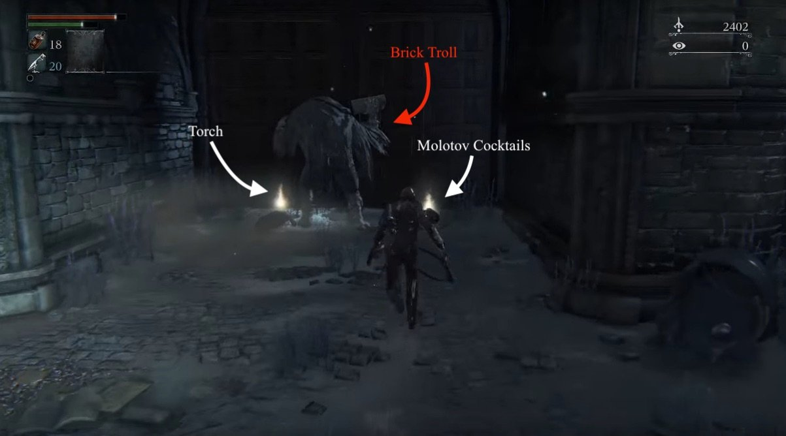
Head back towards the fountain, to the right, and up the stairs. To your left is a gate that acts as a shortcut later on. To the right is the item you saw hidden behind the gate earlier, 1x Coldblood Dew. Up the stairs in next courtyard there are two Rabid Dogs patrolling, and a mob made up of one more dog, and 4 Huntsmen each wielding a rifle, hatchet, torch, and cleaver, respectively. There is also a well with chains attached to it, that were possibly to restrain the rabid dogs in the area. Take your time with this courtyard, as running straight in spells inevitable doom. Instead:
- Use a pebble to pull the Rabid Dog closest to the stairs away to dispatch it, then draw the enemies down the stairs one by one.
- The Rifle Hunter will likely take a position directly above you and attempt to fire down, but the fence will block his fire if you stay low enough.
- If you find yourself in a situation where you have multiple enemies and dogs bearing down on you, then use your gun to keep them at bay, and remember to stay mobile.
Great Bridge
Once the courtyard is clear, head up the stairs onto the Great Bridge. Immediately go left, and look behind the statues to the right of the stagecoach to collect 1x Blood Stone Shard. As you turn back towards the bridge you will spot two Wolf Beasts patrolling by another stagecoach. These wolves are incredibly aggressive and very fast. If you are new to the game, and unsure of fighting the Wolf Beasts, a good strategy is to lure them out using a Pungent Blood Cocktail, then pepper them with Molotovs. However if you'd prefer to avoid these hellhounds, using the Kennel shortcut described earlier will let you avoid fighting this pair of beasts. Should you end up face to face fight with one of these wolves, attempt the following
- Stay mobile, bait their attacks, and try to parry.
- You can set them up for a Visceral Attack by firing at them as they leap towards you.
- Laying into them from behind with light attacks generally keeps them stunned long enough to finish them off. Make sure to be very aggressive if you get up close to them, and make the most of the Rally system to keep your health topped up.
- Alternately, if you have the space, dodge behind them and hit with a charged R2 to stun, followed by a regular R1 to Visceral. They have a long recovery time from a missed attack so this is an easy tactic.
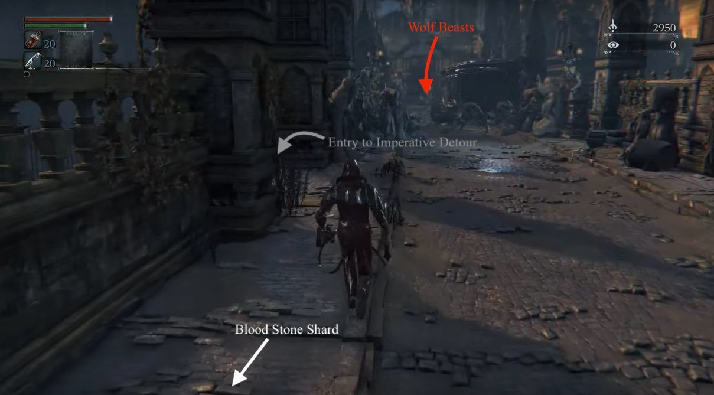
Once the wolves are dispatched, press on further. To your left you'll encounter a Cleaver Huntsman. Kill him then take the stairs he guarded, entering the Dark House. There are 2 Huntsmen waiting in ambush on the top floor: one to your left as you walk in, and one behind some barrels opposite the first Hunter. There will be 1x Coldblood Dew waiting for you once you have dealt with them.
TIP: Using your Torch here can encourage these Hunters to abandon their ambush points and be more aggressive.
Leaving the Dark House
Head down the stairs and deal with another Sword Hunter. Towards the back of the house there is a Wheelchair Huntsman ready to shoot you if you try to loot the Pungent Blood Cocktail in front of him. His back is turned you when you first walk in, so kill him before he knows you're there. He'll always drop Quicksilver Bullets. There is also a note on in the back left corner revealing some more Lore.
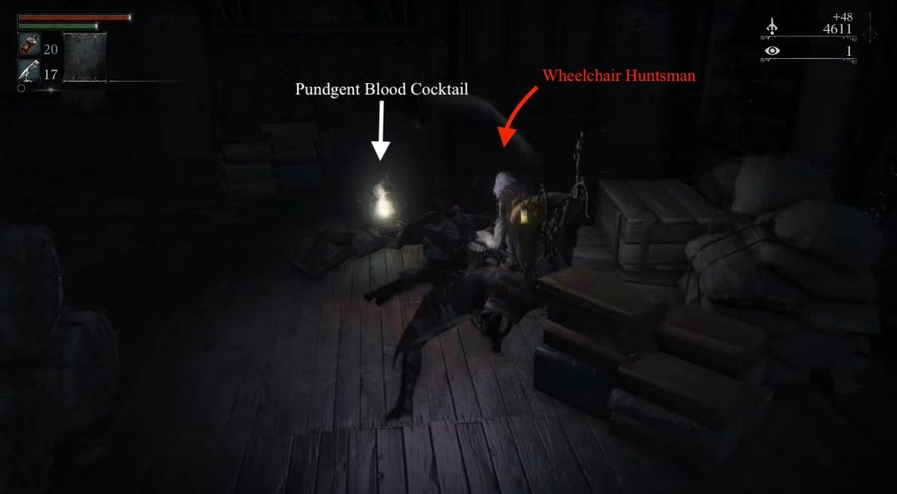
Exit the Dark House through the open door (the locked door is the shortcut accessed via the Kennels). Once he is dispatched, go up the steps and pull the lever, which opens the gate leading back to the Central Yharnam lamp. This shortcut will prove invaluable in the coming fights. For now, head back through the house to the Great Bridge.
On The Great Bridge, head left and you'll find another stagecoach with 3 Carrion Crows and another Brick Troll. Once the area is cleared, press on forward through the archway and prepare to take on the first boss in the game.
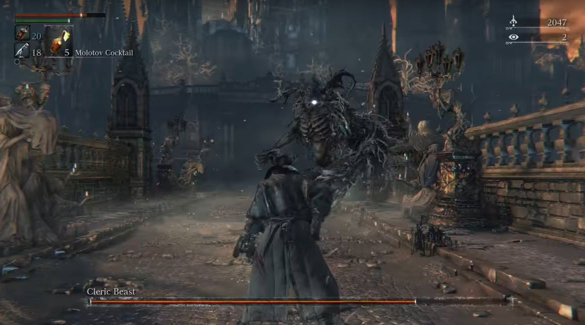
BOSS FIGHT: Cleric Beast
NOTE: The Cleric Beast is an entirely optional boss fight. He can be quite difficult as you will not have had the opportunity to level up your Hunter yet (you require 1 Insight to level up via the Plain Doll). Because the Cleric Beast is weak to fire, you can use your Oil Urns and Molotovs to deal massive damage (recommended) or wait until you meet an NPC named Alfred who will gift you 5x Fire Paper (not recommended, as Fire Paper is rare, expensive, and more useful for a mandatory boss fight later on).
Walking into the boss arena grants you your first point of Insight. Upon your next visit to the Hunter's Dream, the Doll will be awake and you are able to level up. Messengers on the steps will also give you the Beckoning Bell and Silencing Blank. If you're struggling with the boss, you can ring the Beckoning Bell and summon Father Gascoigne as an NPC to help with the fight, at the cost of 1 Insight. His summon location is near the fountain where you fought the first Brick Troll. Once you defeat the Cleric Beast, you'll reach a Lantern and the end of the Great Bridge. Use it to teleport back to the Hunter's Dream to spend your well-earned Blood Echoes.
Imperative Detour: Fountain Shortcut, Tiny Music Box, Hunter Set
This detour will lead you to the Hunter Set attire and to the Tiny Music Box, the latter of which is an indispensable tool for the Father Gascoigne fight. There is a set of stairs directly across from the stairs you came up on. These lead down to a small area overlooking the large bonfire area. Here you will find 10x Pebbles on the overlook, and 1x Bloodstone Shard hidden in the back behind some sacks and barrels. Opposite the lookout is a path blocked by breakable barrels and crates. This will lead to a ladder that will take you to an area with four new enemy types and various items.
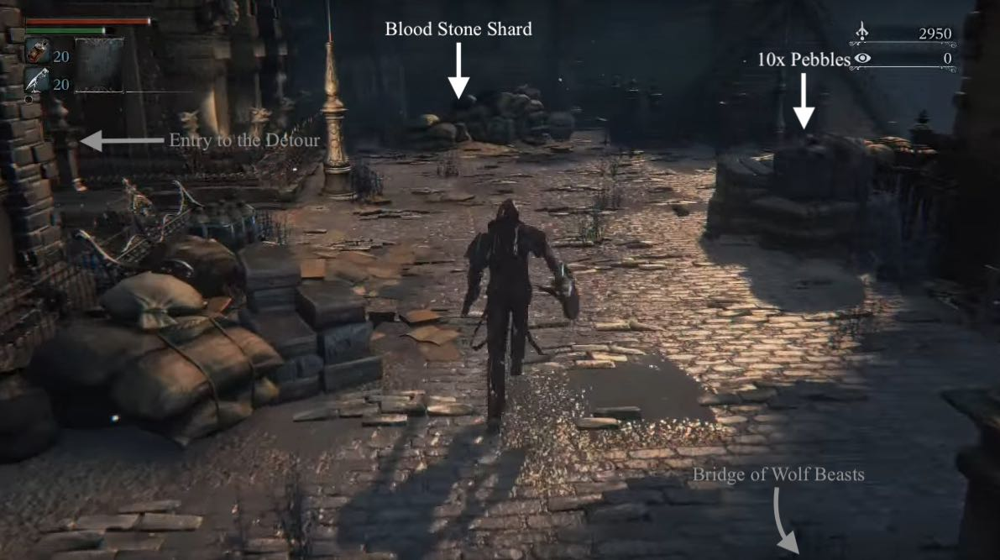
Defeat the four Large Huntsmen partrolling the area above the rats, and look for the glowing item on a horizontal support beam in the sewer below you; drop to the beam to get Thick Coldblood (5). Beware the rats. Defeat them first to prevent getting swarmed. At the end of the sewer, there is a drop. Immediately to the left of that is the Hunter Set, guarded by a Large spear-wielding Huntsman. Your only option here is to drop down; to avoid taking unnecessary fall damage, drop down the beams in the left corner to reduce the fall's effect. Beware the Wretched Undead. Though they move slowly, they hit hard. You will be able to snatch the 10x Quicksilver Bullets they guard without much issue. To acquire the Tiny Music Box, look for a short ladder on your left leading to a wooden platform. Take the ladder on the platform all the way up.
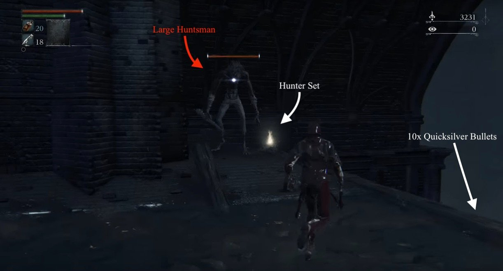
To your right is a group of 4 Carrion Crows guarding your first consumable Insight item. On your left, find a bridge that leads to a church wi th an NPC and a (large) Brick Troll. The moveset for large Brick Trolls is slightly different to small Brick Trolls. Stay vigilant and look for a parry opportunity.
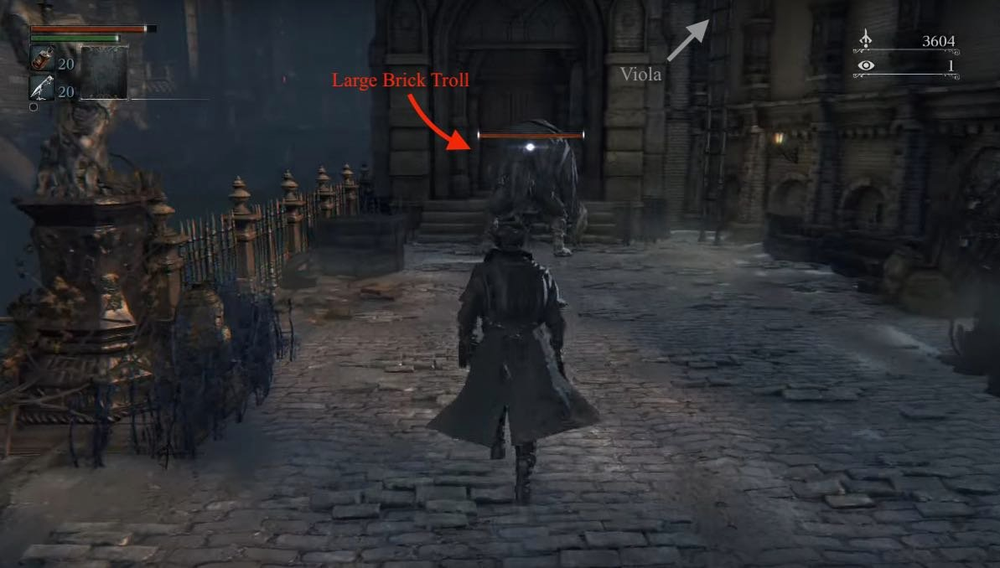
Next to this troll is a ladder that leads to the fountain shortcut, and the window where you will acquire the Tiny Music Box from Viola. Agree to find the girl's mother to acquire it.
Kennels, Central Yharnam Aqueduct and Lift Shortcut
Navigate your way back to the Kennels. This is most easily done by advancing through the fountain shortcut back to the bridge, then dropping off the right side where you picked up the Coldblood Dew (1) earlier. Search the Kennels thoroughly for a Coldblood Dew (3) guarded by a Rabid Dog. Across the bridge is a dog barking at a door. Kill it and knock on the door for dialogue with the Lonely Old Woman. She'll ask if you know of a safe place, but for now the only option open to you is "No". Remember how to get back here, as you will want to do so later.
Head down into the ruined temple. At the bottom right of the first flight of stairs are a group of breakable barrels. Smash through them to access the upper area. Take an immediate right and smash through more barrels to find Eileen The Crow. Listen to her dialogue and she'll tease you about being afraid on this particular hunt, also making mention of the fact that there are no humans alive in Yharnam. She'll give you 4x Bold Hunter's Mark. Speak to her a second time and she'll teach you the Shake Off Cape gesture.
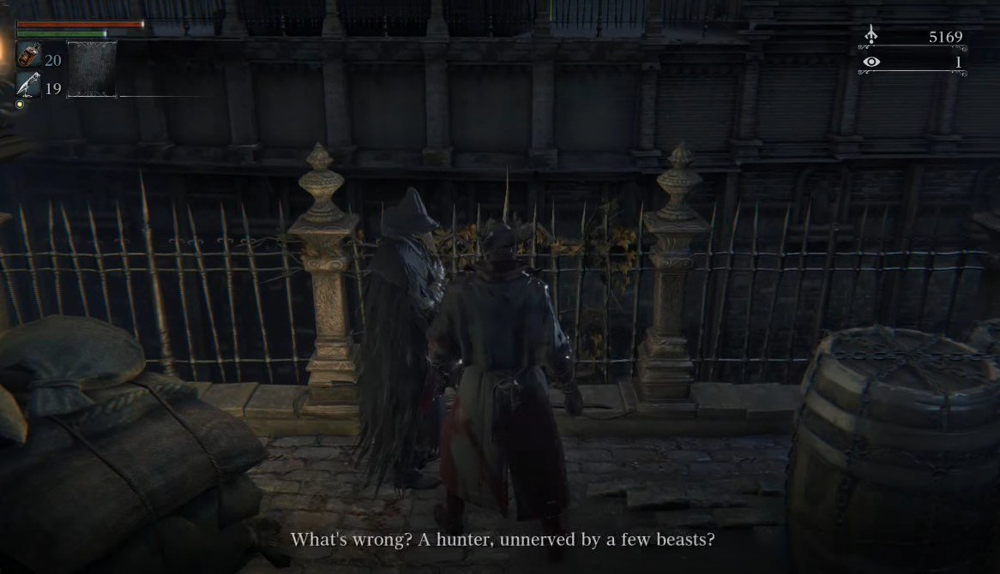
Return to the rafters and carefully make your way around them, picking up the items and cutting down the bodies whose items you will be able to retrieve shortly. Also take note of enemy positions below you. There is 1 Large Huntsman (saw), 1 Large Huntsman (spear), and 1 Rifle Huntsman.
Make your way to the main level and eliminate the enemies. Don't drop down for those items yet as there are a few enemies you want to deal with first. Head through the only exit in the room and you'll come out at the top of Yharnam's aqueduct. Across the gap there will be two Rifle Huntsman and a Large Huntsman. You want to deal with these before venturing to the lower levels. Time your movement so that one of the Rifle Huntsman is walking across the bridge when you launch your attack. You can then dispatch both riflemen before the Large Huntsman has time to get to you. Once the trio are down, explore the rest of the upper level for a 2x Oil Urn drop hidden behind breakable boxes. Beware of Carrion Crows (one is hidden behind barrels). From the Oil Urns, turn around and look down for an item on a horizontal beam. Drop to it to obtain 1x Bloodstone Shard.
Head back into the building and drop down for your items. Start with the right hand side (as you walk in) item. Drop down and on your right will be a single rat. Kill it. Move to the next opening and kill the two rats occupying the area. Once they're dead you can safely pick up the Saw Spear. Drop into the middle and kill the two rats at the end, making sure to pick up the items then head back out to the aqueduct. Climb up the ladder and head back to get the item from the other side. When you drop down on the left there'll be nothing in the first opening, a single rat in the second one, and two occupying the final one. Once all the rats are dead, you can pick up 1x Bloodstone Shard. Navigate back to the top.
Make your way back to the water with the Wretched Undead, and carefully kill your way forward. Keep your eyes upward, as there are Carrion Crows waiting to drop on you from wooden beams. In the alcove on your right immediately following the stairs, there is 1x Bloodstone Shard guarded by a Wretched Undead. When you reach the tunnel you'll see your first Maneater Boar. It is guarding a Coldblood Dew (2) and the Saw Hunter Badge, which unlocks all of the initial equipment options for sale at the Merchants in the Hunter's Dream.
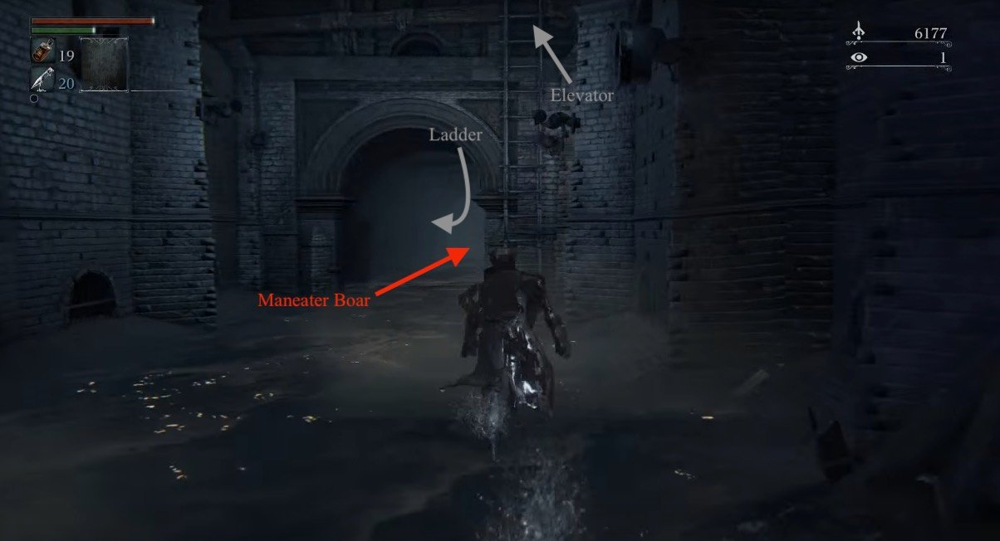
TIP: This particular Maneater Boar is tied to Viola's quest. Killing it now will prevent you from completing the quest.
While you could ascend the ladder directly outside of the tunnel, and go left to activate the final shortcut in Central Yharnam, in the form of a lift, it's best to bolt it past the pig if you don't wish to kill it now. Sprinting past it, and turning left will lead you to another ladder. Climb up it to find a Large Huntsman and a Brick Troll, who will roll a large flaming boulder down the bridge to your left - if you choose to go up the ladder before the pig you'll encounter a mob of Huntsmen rushing at you across the bridge, the boulder should take care of most of them so you should avoid getting hit. Take care of the two of them, then head left and up the stairs to face another 2 Huntsmen and pick up some loot. Do not head up the next set of stairs on the left yet, as this is the entrance to the next boss fight.
Head back and across the bridge where you should find a lift to take you where the Lantern is, a short run past the 2 Brick Trolls. Visit the Hunter's Dream now to level up or spend Blood Echoes, as you are about to fight Father Gascoigne.
Father Gascoigne
Trigger the lift again and head back down. Try to come up the same way you did just now through the sewers, however you can go straight from the bridge as well. Defeat the two enemies rolling the flaming boulder once again, and continue up tp the last set of stairs and you'll enter a bleak looking graveyard. triggering the cutscene for your second boss fight (and first mandatory one).
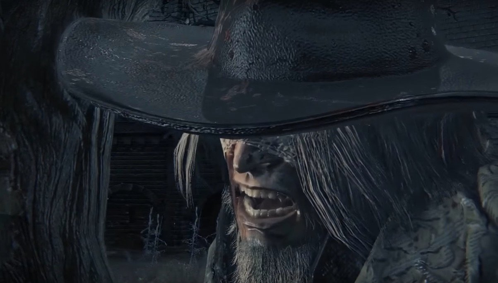
BOSS FIGHT: Father Gascoigne
After the Fight: Viola, Iosefka's Clinic, Flamesprayer
Congratulations on besting Gascoigne! Head up the stairs of the graveyard and find a gap in the fence to the left. Drop to the roof to find a female body with the Red Jeweled Brooch item on her.
NOTE: This is your last chance to acquire Iosefka's Blood Vial. Activating the Oedon Chapel cutscene will prevent you from getting it. Return to the 1st Floor Sickroom and speak to the woman behind the door to obtain it.
Return to the top level and open the large gates. Follow the safe path to access Oedon Chapel.
NOTE: Triggering the Oedon Chapel cutscene is necessary to advance Viola's quest.
Return to the Central Yharnam lamp, and speak once more to Gilbert. He will award you the Flamesprayer. Navigate your way back to Viola and make your decision. Finally, return to the lantern at the 1st Floor Sickroom and speak to the woman once more. She will offer to house survivors. This is one of two safe places to send survivors, the other being Oedon Chapel, to which you may now proceed.
Central Yharnham Map
 Anonymous
AnonymousYharnam one of the best world of all time actually better than real world
- Anonymous
typo at the top of the page "Flamespraryer" - breaks the link as well
- Anonymous
The entirety of Yharnam is my favourite 'world' in any game I've ever played. The atmosphere, the architecture, the lore, the characters, it's all perfect. I wish Miyazaki could make games forever...
- Anonymous
Gaming for as long as they've existed. this is first game I was hyped to play, but uninstalled do to poor design and inability to progress
- Anonymous
Eileen. Like wtf. She looked like an enemy so I attacked her. Then died. So i looked this up and went back but now she just attacks me. Awesome game design...
- Anonymous
There's so many things that this level does perfectly. It's so good and since it's the tutorial level, I was way more exited to explore this on my first run than the other 1st levels in the series. I'm glad From has always had good level design, and have only been improving (poison swamps can go though, I wouldn't mind)
- Anonymous
Don't know why the guide says that Viola's quest will fail if you kill the pig too early. It does respawn. And I think the guide even used to say that a few years ago when I last played this game. Maybe someone should finally fix that.
- Anonymous
Might want to rewrite that last paragraph.... kinda helps to go to the clinic BEFORE viola.... so you have the damn option to send her there.
- Anonymous
When i was in central yharnam after blood starved beast, i was farming for bullets by killing guy at the left of Gilbert, i suddenly took some fire damage??? What was that or why.... is it a glitch
- Anonymous
There is something odd I noticed, whenever you go from from the dark house to the lantern. As soon as you pass the gate you will hear the faint sound of a Fluorescent Flower dieing. It happens every time and I'm wondering if it is just an audio with trigger or if there is something that gets unloaded causing one of them to die creating the sound. Try it out and write what you think.
- Anonymous
There's only 3 huntsmen above the rats in the Leather Set sewer detour. The one guarding the set makes 4, but there's only 3 above the rats.
- Anonymous
I've never played bloodeborne before. What's the point of the game? Just to finish the map? I suck with the axe I'm using and die all the time. What am I doing wrong? Thank you
- Anonymous
I was able to complete most of Viola’s quest before killing Gascoigne. I had her quest to fin her mom, went into the boss fight for he first time. While running around saw the item, picked it up. Got killed. However next time I talked to her she cried. After reloading the map she was gone and the pig dropped the ribbon. Haven’t checked of her sister was there because I went to pill Gascoigne after that.
- Anonymous
Guide is good up to the part "If you choose not to fight him yet, double back to the stairs that lead down tothe Dark Residence. You may have noticed another path past the Dark Residence, but there is little we can do there at this moment, other than fight two Brick Ogre's. Go straight through the ground floor of the Dark Residence, taking a path under the Great Bridge leading to the Kennels. " What? Where? Does this sentence say to go to the path with 2 ogres or not? If not then I have no idea what is meant with " Go straight through the ground floor of the Dark Residence, taking a path under the Great Bridge leading to the Kennels." On the ground floor there are only 1 doors and they're locked.
- Anonymous
First time playing, having some problems with the first bosses. Tips?
- Anonymous
FYI if you have defeated father gascorn go back to the Scottish guy near central yarnam lamp and he will give you an extremely op flamethrower which becomes insanely useful for defeating the blood starved beast because of his weakness to fire.
personally, I would've told people about the hunter's armor in the sewer as soon as they got to the Great Bridge and saw the wolf beasts
- Anonymous
You can summon Gascoine for the Cleric Beast fight if you die against the Cleric Beast you can summon him to the left of Gilbert.
- Anonymous
Removed Vaati's video as it had embeds, and is not a partner.
isn't it too long maybe? i just wonder who would give it a shot instead of watching any video ;d
Spent a lot of time fixing the overly descriptive enemy bio's, added in links to almost every new item in this area, added the second Aqueduct area to the walkthrough, cleaned up the walkthrough a little, admittedly this area is HUGE walkthrough wise, maybe split the Central Yharnam and Aqueduct area's? (From the Kennel point onwards i'd think) Cy
- Anonymous
Not sure if anyone can help... I went through the big warehouse where the rats and wolfmen are, then through the sewers. When I got to where you can climb down to where the crawlers are, I looked up across the sewers and saw some rafters and corpses with items. How do I get over there to loot those bodies? Are they in another area, or can I get there from the sewers?
- Anonymous
Just so everybody knows, if you attack eileen and kill her you unlock her crow outfir and her twin blades
- Anonymous
The two Wolf Beasts on the bridge can't go inside the nearby house. If anyone's having trouble killing them, grab their attention and go back inside the house immediately. They'd keep on trying to reach you and get inside but they won't be able to (is this a bug maybe?). They're practically sitting ducks at that point.
- Anonymous
New to these types of games, and I've been stuck on the first boss for two weeks. Any tips?
- Anonymous
I beat central yharnam, and have returned. I was curious if anyone else has encountered the hunter that spawns in the Tomb of Oedon... its not a problem so much as an annoyance. Gotta tgat hunters pretty skilled xD
- Anonymous
Has anyone else noticed that if you are near the first couple of red lantern doors on the main street (after leaving Gilbert and heading right down to the street by either path, the inhabitants are unfriendly to outsiders) you can occasionally hear a massive roar noise? I noticed it in my first game after Rom was already dead, but I started a new character (not NG+) and I hear it my first time through. Anyone know what this is?
- Anonymous
Pertaining to the two scourge beasts before the cleric beast. If you have yet to enter the black house past them, they can easily be lured back to the wagons. There is a gap that they cannot enter
- Anonymous
Has anyone else noticed a strange shadow on a building right near the ladder that leads to the sewers outside the elevator, in the opposite side of the big bridge that leads to the Tomb of Oedon? It looks like two Logarius wheels together. I noticed it on my first run through. At some point the shadow disappears. I made a screenshot of it.
- Anonymous
If I'm remebering this right, the dead horses throughout Yharnam have unique noises if you step on them.
- Anonymous
Last night I was summoned to help. The beckoner's connection was not great, and when I used the elevator to go up there was a little fall animation as I stepped inside which took a tiny portion of my health. As it went up it glitch again and I was on the top of the elevator, then I suddenly fell through and was falling through the map for a while, eventually I was in nothing but light and still falling, until some time later I hit the "ground" and died.
- Anonymous
Hey, with the release of the Old Hunters, you can summon the npc Henriett in Cathedral Ward just after the gate near the old wooden shield. I seem to be able to summon the npc by using The Old Hunter's Bell. If someone could add this to the page that'd be great.
- Anonymous
Does anyone know where on our earth Yharnam is "supposed" to be? As in, what country is it most similar to? Do we have any developer hints as to where it was modeled after? Can anyone determine what accent the citizens have? The architecture is Victorian Gothic in my understanding, but it reminds me of eastern European cities like Prague and Cologne. I'm very interested in having a time/place reference for the setting of this game. (I accidentally posted this as a comment to another discussion below; my apologies.)
- Anonymous
Did anyone else noticed that the enemy townsfolk talk?? They say something
- Anonymous
On the front of the carriages are two pole-like extensions. If you roll/get pushed by enemies inbetween, you can get stuck. I had this happen a few month's back and I thought they may fix it but it happened to me yesterday too.
the scariest level in the game: london
0
+10
-1